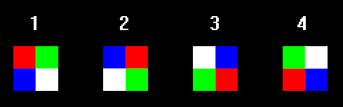
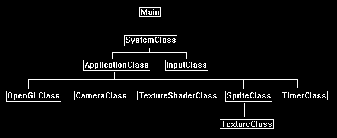

In this tutorial we will cover how to create and render sprites on Linux using OpenGL 4.0.
We will also learn the basics of using system timers.
This tutorial builds upon the knowledge from the previous tutorial on how to render 2D bitmap images.
A sprite is an animated image made up of multiple static 2D bitmap images that are rendered quickly in a sequence.
For example, in this tutorial we will create four simple 2D images and save them in targa format.
They look like the following:

Then we will load those four images into a texture array and render them in a sequence to give the illusion of an animated square that has four rotating colors.
Now the way we do that is very simple.
We just reuse the BitmapClass from the previous tutorial and give it an array of textures instead of just one.
We will also update it every frame with the current frame time so that it can smoothly cycle through the four textures.
We will also create a file to represent the data needed to load and render our sprite.
Here is the file we use for this tutorial:
sprite_data_01.txt
4
../Engine/data/sprite01.tga
../Engine/data/sprite02.tga
../Engine/data/sprite03.tga
../Engine/data/sprite04.tga
250
The format is simple.
The first line tells us how many targa images will make up the sprite.
The following lines are the filenames of each targa image that make up the sprite.
And the last line is the speed in milliseconds that we want the sprite to cycle the images at.
Data Driven Design
Now I will take a quick moment to discuss data driven design.
The idea of using text files, tools with sliders and knobs, and so forth to control the contents or flow of the program is called data driven design.
You want to be able to quickly make changes, sometimes by many people at once, to the same program. Sometimes even while the program is running.
And you definitely want to be able to do this without ever having to recompile.
So, in this example here we have a file that controls the basics of how the sprite works, instead of hardcoding any of this into the program.
You can simply modify the text file and run the program again and the changes will take effect.
Framework
The framework has changed by removing the BitmapClass and replacing it with the SpriteClass.
We also add a new class named TimerClass which will record the milliseconds between each frame so that classes like SpriteClass can use it for timing things like animation.

Spriteclass.h
The SpriteClass is just the BitmapClass re-written to include an array of textures.
It also includes a frame timer assist smoothly cycling through the textures that get mapped to the 2D square.
////////////////////////////////////////////////////////////////////////////////
// Filename: spriteclass.h
////////////////////////////////////////////////////////////////////////////////
#ifndef _SPRITECLASS_H_
#define _SPRITECLASS_H_
//////////////
// INCLUDES //
//////////////
#include <fstream>
using namespace std;
///////////////////////
// MY CLASS INCLUDES //
///////////////////////
#include "textureclass.h"
////////////////////////////////////////////////////////////////////////////////
// Class Name: SpriteClass
////////////////////////////////////////////////////////////////////////////////
class SpriteClass
{
private:
struct VertexType
{
float x, y, z;
float tu, tv;
};
public:
SpriteClass();
SpriteClass(const SpriteClass&);
~SpriteClass();
bool Initialize(OpenGLClass*, int, int, int, int, char*);
void Shutdown();
void Render();
The new Update function will need to be called each Frame with the speed of the frame as input.
void Update(float);
void SetTexture(unsigned int);
void SetRenderLocation(int, int);
private:
bool InitializeBuffers();
void ShutdownBuffers();
bool UpdateBuffers();
void RenderBuffers();
bool LoadTextures(char*);
void ReleaseTextures();
private:
OpenGLClass* m_OpenGLPtr;
int m_vertexCount, m_indexCount, m_screenWidth, m_screenHeight, m_bitmapWidth, m_bitmapHeight, m_renderX, m_renderY, m_prevPosX, m_prevPosY;
unsigned int m_vertexArrayId, m_vertexBufferId, m_indexBufferId;
TextureClass* m_Textures;
int m_textureCount, m_currentTexture;
float m_cycleTime, m_frameTime;
};
#endif
Spriteclass.cpp
////////////////////////////////////////////////////////////////////////////////
// Filename: spriteclass.cpp
////////////////////////////////////////////////////////////////////////////////
#include "spriteclass.h"
SpriteClass::SpriteClass()
{
m_OpenGLPtr = 0;
m_Textures = 0;
}
SpriteClass::SpriteClass(const SpriteClass& other)
{
}
SpriteClass::~SpriteClass()
{
}
The Initialize function works the same as the BitmapClass mostly, but now it takes in a spriteFilename which gives access to the text file that contains the definition of the sprite.
bool SpriteClass::Initialize(OpenGLClass* OpenGL, int screenWidth, int screenHeight, int renderX, int renderY, char* spriteFilename)
{
bool result;
// Store a pointer to the OpenGL object.
m_OpenGLPtr = OpenGL;
// Store the screen size.
m_screenWidth = screenWidth;
m_screenHeight = screenHeight;
// Store where the bitmap should be rendered to.
m_renderX = renderX;
m_renderY = renderY;
We also now initialize the frame time. This will be used to control the sprite cycling speed.
// Initialize the frame time for this sprite object.
m_frameTime = 0.0f;
// Initialize the vertex and index buffer that hold the geometry for the sprite bitmap.
result = InitializeBuffers();
if(!result)
{
return false;
}
// Load the textures for this sprite.
result = LoadTextures(spriteFilename);
if(!result)
{
return false;
}
return true;
}
void SpriteClass::Shutdown()
{
// Release the texture used for this sprite.
ReleaseTextures();
// Release the vertex and index buffers.
ShutdownBuffers();
// Release the pointer to the OpenGL object.
m_OpenGLPtr = 0;
return;
}
void SpriteClass::Render()
{
// Update the buffers if the position of the sprite has changed from its original position.
UpdateBuffers();
// Put the vertex and index buffers on the graphics pipeline to prepare them for drawing.
RenderBuffers();
return;
}
The Update function takes in the frame time each frame.
This is in milliseconds and will usually be around 16-17ms if you are running your program at 60fps.
Each frame we add this time to the m_frameTime counter.
If it reaches or passes the cycle time that was defined for this sprite, then we change the sprite to use the next texture in the array.
We then reset the timer to start from zero again.
void SpriteClass::Update(float frameTime)
{
// Increment the frame time each frame.
m_frameTime += frameTime;
// Check if the frame time has reached the cycle time.
if(m_frameTime >= m_cycleTime)
{
// If it has then reset the frame time and cycle to the next sprite in the texture array.
m_frameTime -= m_cycleTime;
m_currentTexture++;
// If we are at the last sprite texture then go back to the beginning of the texture array to the first texture again.
if(m_currentTexture == m_textureCount)
{
m_currentTexture = 0;
}
}
return;
}
bool SpriteClass::InitializeBuffers()
{
VertexType* vertices;
unsigned int* indices;
int i;
// Initialize the previous rendering position to negative one.
m_prevPosX = -1;
m_prevPosY = -1;
// Set the number of vertices in the vertex array.
m_vertexCount = 6;
// Set the number of indices in the index array.
m_indexCount = m_vertexCount;
// Create the vertex array.
vertices = new VertexType[m_vertexCount];
// Create the index array.
indices = new unsigned int[m_indexCount];
// Initialize the vertex arrays to zeros at first.
memset(vertices, 0, (sizeof(VertexType) * m_vertexCount));
// Load the index array with data.
for(i=0; i<m_indexCount; i++)
{
indices[i] = i;
}
// Allocate an OpenGL vertex array object.
m_OpenGLPtr->glGenVertexArrays(1, &m_vertexArrayId);
// Bind the vertex array object to store all the buffers and vertex attributes we create here.
m_OpenGLPtr->glBindVertexArray(m_vertexArrayId);
// Generate an ID for the vertex buffer.
m_OpenGLPtr->glGenBuffers(1, &m_vertexBufferId);
// Bind the vertex buffer and load the vertex data into the vertex buffer. Set gpu hint to dynamic since it will change once in a while.
m_OpenGLPtr->glBindBuffer(GL_ARRAY_BUFFER, m_vertexBufferId);
m_OpenGLPtr->glBufferData(GL_ARRAY_BUFFER, m_vertexCount * sizeof(VertexType), vertices, GL_DYNAMIC_DRAW);
// Enable the two vertex array attributes.
m_OpenGLPtr->glEnableVertexAttribArray(0); // Vertex position.
m_OpenGLPtr->glEnableVertexAttribArray(1); // Texture coordinates.
// Specify the location and format of the position portion of the vertex buffer.
m_OpenGLPtr->glVertexAttribPointer(0, 3, GL_FLOAT, false, sizeof(VertexType), 0);
// Specify the location and format of the texture coordinate portion of the vertex buffer.
m_OpenGLPtr->glVertexAttribPointer(1, 2, GL_FLOAT, false, sizeof(VertexType), (unsigned char*)NULL + (3 * sizeof(float)));
// Generate an ID for the index buffer.
m_OpenGLPtr->glGenBuffers(1, &m_indexBufferId);
// Bind the index buffer and load the index data into it. Leave it static since the indices won't change, only the vertices.
m_OpenGLPtr->glBindBuffer(GL_ELEMENT_ARRAY_BUFFER, m_indexBufferId);
m_OpenGLPtr->glBufferData(GL_ELEMENT_ARRAY_BUFFER, m_indexCount* sizeof(unsigned int), indices, GL_STATIC_DRAW);
// Now that the buffers have been loaded we can release the array data.
delete [] vertices;
vertices = 0;
delete [] indices;
indices = 0;
return true;
}
void SpriteClass::ShutdownBuffers()
{
// Release the vertex array object.
m_OpenGLPtr->glBindVertexArray(0);
m_OpenGLPtr->glDeleteVertexArrays(1, &m_vertexArrayId);
// Release the vertex buffer.
m_OpenGLPtr->glBindBuffer(GL_ARRAY_BUFFER, 0);
m_OpenGLPtr->glDeleteBuffers(1, &m_vertexBufferId);
// Release the index buffer.
m_OpenGLPtr->glBindBuffer(GL_ELEMENT_ARRAY_BUFFER, 0);
m_OpenGLPtr->glDeleteBuffers(1, &m_indexBufferId);
return;
}
bool SpriteClass::UpdateBuffers()
{
VertexType* vertices;
void* dataPtr;
float left, right, top, bottom;
// If the position we are rendering this sprite to hasn't changed then don't update the vertex buffer.
if((m_prevPosX == m_renderX) && (m_prevPosY == m_renderY))
{
return true;
}
// If the rendering location has changed then store the new position and update the vertex buffer.
m_prevPosX = m_renderX;
m_prevPosY = m_renderY;
// Create the vertex array.
vertices = new VertexType[m_vertexCount];
// Calculate the screen coordinates of the left side of the sprite.
left = (float)((m_screenWidth / 2) * -1) + (float)m_renderX;
// Calculate the screen coordinates of the right side of the sprite.
right = left + (float)m_bitmapWidth;
// Calculate the screen coordinates of the top of the sprite.
top = (float)(m_screenHeight / 2) - (float)m_renderY;
// Calculate the screen coordinates of the bottom of the sprite.
bottom = top - (float)m_bitmapHeight;
// Load the vertex array with data.
// First triangle.
vertices[0].x = left; // Top left.
vertices[0].y = top;
vertices[0].z = 0.0f;
vertices[0].tu = 0.0f;
vertices[0].tv = 1.0f;
vertices[1].x = right; // Bottom right.
vertices[1].y = bottom;
vertices[1].z = 0.0f;
vertices[1].tu = 1.0f;
vertices[1].tv = 0.0f;
vertices[2].x = left; // Bottom left.
vertices[2].y = bottom;
vertices[2].z = 0.0f;
vertices[2].tu = 0.0f;
vertices[2].tv = 0.0f;
// Second triangle.
vertices[3].x = left; // Top left.
vertices[3].y = top;
vertices[3].z = 0.0f;
vertices[3].tu = 0.0f;
vertices[3].tv = 1.0f;
vertices[4].x = right; // Top right.
vertices[4].y = top;
vertices[4].z = 0.0f;
vertices[4].tu = 1.0f;
vertices[4].tv = 1.0f;
vertices[5].x = right; // Bottom right.
vertices[5].y = bottom;
vertices[5].z = 0.0f;
vertices[5].tu = 1.0f;
vertices[5].tv = 0.0f;
// Bind the vertex buffer.
m_OpenGLPtr->glBindBuffer(GL_ARRAY_BUFFER, m_vertexBufferId);
// Get a pointer to the buffer's actual location in memory.
dataPtr = m_OpenGLPtr->glMapBuffer(GL_ARRAY_BUFFER, GL_WRITE_ONLY);
// Copy the vertex data into memory.
memcpy(dataPtr, vertices, m_vertexCount * sizeof(VertexType));
// Unlock the vertex buffer.
m_OpenGLPtr->glUnmapBuffer(GL_ARRAY_BUFFER);
// Now that the vertex buffer has been loaded we can release the array data.
delete [] vertices;
vertices = 0;
return true;
}
void SpriteClass::RenderBuffers()
{
// Bind the vertex array object that stored all the information about the vertex and index buffers.
m_OpenGLPtr->glBindVertexArray(m_vertexArrayId);
// Render the vertex buffer using the index buffer.
glDrawElements(GL_TRIANGLES, m_indexCount, GL_UNSIGNED_INT, 0);
return;
}
The LoadTextures function has been changed from the BitmapClass version.
It now opens a file that defines the SpriteClass object.
We open the file and read in the number of textures it uses, each tga file used for each of the textures, and the speed at which it should cycle through the textures.
bool SpriteClass::LoadTextures(char* filename)
{
char textureFilename[128];
ifstream fin;
int i, j, cycleTime;
char input;
bool result;
// Open the sprite info data file.
fin.open(filename);
if(fin.fail())
{
return false;
}
// Read in the number of textures.
fin >> m_textureCount;
// Create and initialize the texture array with the texture count from the file.
m_Textures = new TextureClass[m_textureCount];
// Read to start of next line.
fin.get(input);
// Read in each texture file name.
for(i=0; i<m_textureCount; i++)
{
j=0;
fin.get(input);
while(input != '\n')
{
textureFilename[j] = input;
j++;
fin.get(input);
}
textureFilename[j] = '\0';
// Once you have the filename then load the texture in the texture array.
result = m_Textures[i].Initialize(m_OpenGLPtr, textureFilename, false);
if(!result)
{
return false;
}
}
// Read in the cycle time.
fin >> cycleTime;
// Convert integer millisecond cycle time to floating point as seconds.
m_cycleTime = (float)cycleTime * 0.001f;
// Close the file.
fin.close();
// Get the dimensions of the first texture and use that as the dimensions of the 2D sprite images.
m_bitmapWidth = m_Textures[0].GetWidth();
m_bitmapHeight = m_Textures[0].GetHeight();
// Set the starting texture in the cycle to be the first one in the list.
m_currentTexture = 0;
return true;
}
The ReleaseTextures function will release the array of textures that was loaded at the start of the program.
void SpriteClass::ReleaseTextures()
{
int i;
// Release the texture objects.
if(m_Textures)
{
for(i=0; i<m_textureCount; i++)
{
m_Textures[i].Shutdown();
}
delete [] m_Textures;
m_Textures = 0;
}
return;
}
The new SetTexture function will set active the current texture for the sprite from the texture array.
void SpriteClass::SetTexture(unsigned int textureUnit)
{
// Set the current texture in the sprite cycle.
m_Textures[m_currentTexture].SetTexture(m_OpenGLPtr, textureUnit);
return;
}
void SpriteClass::SetRenderLocation(int x, int y)
{
m_renderX = x;
m_renderY = y;
return;
}
Timerclass.h
The TimerClass records and provides the delta of each frame in milliseconds.
You can modify this functions to be more granular and provide nanoseconds instead, but milliseconds will work fine for the purposes of these tutorials.
////////////////////////////////////////////////////////////////////////////////
// Filename: timerclass.h
////////////////////////////////////////////////////////////////////////////////
#ifndef _TIMERCLASS_H_
#define _TIMERCLASS_H_
//////////////
// INCLUDES //
//////////////
#include <sys/time.h>
////////////////////////////////////////////////////////////////////////////////
// Class name: TimerClass
////////////////////////////////////////////////////////////////////////////////
class TimerClass
{
public:
TimerClass();
TimerClass(const TimerClass&);
~TimerClass();
void Initialize();
void Frame();
float GetTime();
int GetFrameTime();
private:
long m_startSeconds, m_startMilliseconds;
int m_frameTime;
};
#endif
Timerclass.cpp
///////////////////////////////////////////////////////////////////////////////
// Filename: timerclass.cpp
///////////////////////////////////////////////////////////////////////////////
#include "timerclass.h"
TimerClass::TimerClass()
{
}
TimerClass::TimerClass(const TimerClass& other)
{
}
TimerClass::~TimerClass()
{
}
void TimerClass::Initialize()
{
struct timeval time;
// Get the start time.
gettimeofday(&time, 0);
// Store the start time.
m_startSeconds = time.tv_sec;
m_startMilliseconds = time.tv_usec / 1000;
return;
}
The Frame function must be called by your program each frame.
It will calculate how many milliseconds passed since the previous frame, and then store that value for you to access.
void TimerClass::Frame()
{
struct timeval time;
long seconds, microseconds, secondsDelta, milliseconds, currentMs;
// Get the current time.
gettimeofday(&time, 0);
seconds = time.tv_sec;
microseconds = time.tv_usec;
// Calculate the current milliseconds that have passed since the previous frame.
milliseconds = microseconds / 1000;
secondsDelta = seconds - m_startSeconds;
currentMs = (secondsDelta * 1000) + milliseconds;
m_frameTime = (int)(currentMs - m_startMilliseconds);
// Restart the timer.
gettimeofday(&time, 0);
m_startSeconds = time.tv_sec;
m_startMilliseconds = time.tv_usec / 1000;
return;
}
float TimerClass::GetTime()
{
return (float)(m_frameTime * 0.001f);
}
int TimerClass::GetFrameTime()
{
return m_frameTime;
}
Applicationclass.h
The ApplicationClass now uses the new SpriteClass and TimerClass.
////////////////////////////////////////////////////////////////////////////////
// Filename: applicationclass.h
////////////////////////////////////////////////////////////////////////////////
#ifndef _APPLICATIONCLASS_H_
#define _APPLICATIONCLASS_H_
/////////////
// GLOBALS //
/////////////
const bool FULL_SCREEN = false;
const bool VSYNC_ENABLED = true;
const float SCREEN_NEAR = 0.3f;
const float SCREEN_DEPTH = 1000.0f;
///////////////////////
// MY CLASS INCLUDES //
///////////////////////
#include "inputclass.h"
#include "openglclass.h"
#include "cameraclass.h"
#include "textureshaderclass.h"
#include "spriteclass.h"
#include "timerclass.h"
////////////////////////////////////////////////////////////////////////////////
// Class Name: ApplicationClass
////////////////////////////////////////////////////////////////////////////////
class ApplicationClass
{
public:
ApplicationClass();
ApplicationClass(const ApplicationClass&);
~ApplicationClass();
bool Initialize(Display*, Window, int, int);
void Shutdown();
bool Frame(InputClass*);
private:
bool Render();
private:
OpenGLClass* m_OpenGL;
CameraClass* m_Camera;
TextureShaderClass* m_TextureShader;
SpriteClass* m_Sprite;
TimerClass* m_Timer;
};
#endif
Applicationclass.cpp
////////////////////////////////////////////////////////////////////////////////
// Filename: applicationclass.cpp
////////////////////////////////////////////////////////////////////////////////
#include "applicationclass.h"
ApplicationClass::ApplicationClass()
{
m_OpenGL = 0;
m_Camera = 0;
m_TextureShader = 0;
m_Sprite = 0;
m_Timer = 0;
}
ApplicationClass::ApplicationClass(const ApplicationClass& other)
{
}
ApplicationClass::~ApplicationClass()
{
}
bool ApplicationClass::Initialize(Display* display, Window win, int screenWidth, int screenHeight)
{
char spriteFilename[128];
bool result;
// Create and initialize the OpenGL object.
m_OpenGL = new OpenGLClass;
result = m_OpenGL->Initialize(display, win, screenWidth, screenHeight, SCREEN_NEAR, SCREEN_DEPTH, VSYNC_ENABLED);
if(!result)
{
cout << "Error: Could not initialize the OpenGL object." << endl;
return false;
}
// Create and initialize the camera object.
m_Camera = new CameraClass;
m_Camera->SetPosition(0.0f, 0.0f, -10.0f);
m_Camera->Render();
// Create and initialize the texture shader object.
m_TextureShader = new TextureShaderClass;
result = m_TextureShader->Initialize(m_OpenGL);
if(!result)
{
cout << "Error: Could not initialize the texture shader object." << endl;
return false;
}
Here we initialize the new sprite object using the sprite_data_01.txt file.
// Set the sprite info file we will be using.
strcpy(spriteFilename, "../Engine/data/sprite_data_01.txt");
// Create and initialize the sprite object.
m_Sprite = new SpriteClass;
result = m_Sprite->Initialize(m_OpenGL, screenWidth, screenHeight, 50, 50, spriteFilename);
if(!result)
{
cout << "Error: Could not initialize the sprite object." << endl;
return false;
}
The new TimerClass object is initialized here.
// Create and initialize the timer object.
m_Timer = new TimerClass;
m_Timer->Initialize();
return true;
}
In the Shutdown function we will release the new SpriteClass and TimerClass objects.
void ApplicationClass::Shutdown()
{
// Release the timer object.
if(m_Timer)
{
delete m_Timer;
m_Timer = 0;
}
// Release the sprite object.
if(m_Sprite)
{
m_Sprite->Shutdown();
delete m_Sprite;
m_Sprite = 0;
}
// Release the texture shader object.
if(m_TextureShader)
{
m_TextureShader->Shutdown();
delete m_TextureShader;
m_TextureShader = 0;
}
// Release the camera object.
if(m_Camera)
{
delete m_Camera;
m_Camera = 0;
}
// Release the OpenGL object.
if(m_OpenGL)
{
m_OpenGL->Shutdown();
delete m_OpenGL;
m_OpenGL = 0;
}
return;
}
bool ApplicationClass::Frame(InputClass* Input)
{
float frameTime;
bool result;
Each frame we update the TimerClass object to record the delta in time since the last frame in milliseconds.
// Update the system stats.
m_Timer->Frame();
// Get the current frame time.
frameTime = m_Timer->GetTime();
// Check if the escape key has been pressed, if so quit.
if(Input->IsEscapePressed() == true)
{
return false;
}
Each frame we also update the SpriteClass object so that it can change to the next texture if the frame time meets the requirements.
// Update the sprite object using the frame time.
m_Sprite->Update(frameTime);
// Render the graphics scene.
result = Render();
if(!result)
{
return false;
}
return true;
}
bool ApplicationClass::Render()
{
float worldMatrix[16], viewMatrix[16], orthoMatrix[16];
bool result;
// Clear the buffers to begin the scene.
m_OpenGL->BeginScene(0.0f, 0.0f, 0.0f, 1.0f);
// Get the world, view, and ortho matrices from the opengl and camera objects.
m_OpenGL->GetWorldMatrix(worldMatrix);
m_Camera->GetViewMatrix(viewMatrix);
m_OpenGL->GetOrthoMatrix(orthoMatrix);
// Disable the Z buffer for 2D rendering.
m_OpenGL->TurnZBufferOff();
// Set the texture shader as active and set its parameters.
result = m_TextureShader->SetShaderParameters(worldMatrix, viewMatrix, orthoMatrix);
if(!result)
{
return false;
}
Now we render the sprite.
// Set the current sprite texture in the pixel shader.
m_Sprite->SetTexture(0);
// Render the sprite using the texture shader.
m_Sprite->Render();
// Enable the Z buffer now that 2D rendering is complete.
m_OpenGL->TurnZBufferOn();
// Present the rendered scene to the screen.
m_OpenGL->EndScene();
return true;
}
Summary
We can now render animated sprites on the screen.

To Do Exercises
1. Recompile and make sure you have an animated sprite rendered to 50,50 on the screen.
2. Change the speed the sprite runs at in the text file.
3. Create your own sprite that uses more than four frames of animation and get it running.
4. Use the TimerClass and SpriteClass together to move the sprite smoothly across the screen.
Source Code
Source Code and Data Files: gl4linuxtut13_src.tar.gz